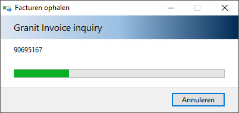

Ga naar E-factuur inkomend (KEI).
Kies voor de knop Facturen ophalen.
Kies voor de knop Ja.


of

Het is mogelijk om nieuwe (digitale) inkoopfacturen op te halen bij diverse leveranciers.
Bij Instellingen externe communicatie moet bij deze klanten invoice inquiry ingesteld zijn, anders is de knop Facturen ophalen niet zichtbaar.
Om nieuwe facturen op te halen, doorloopt u de volgende stappen:
Ga naar E-factuur inkomend (KEI).
Kies voor de knop Facturen ophalen.
Kies voor de knop Ja.

De nieuwe facturen worden opgehaald en toegevoegd.
Opmerking: De facturen komen standaard in de volgende map te staan: C:\<Beversoftware>\PW\<ADM>\INBOX\FACTUUR\<FACTUURNUMMER>\
Gerelateerde onderwerpen
Copyright ©